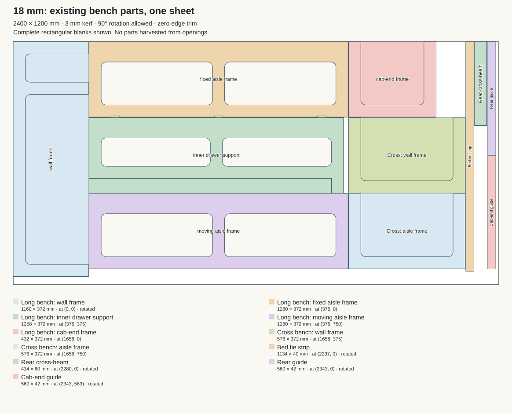
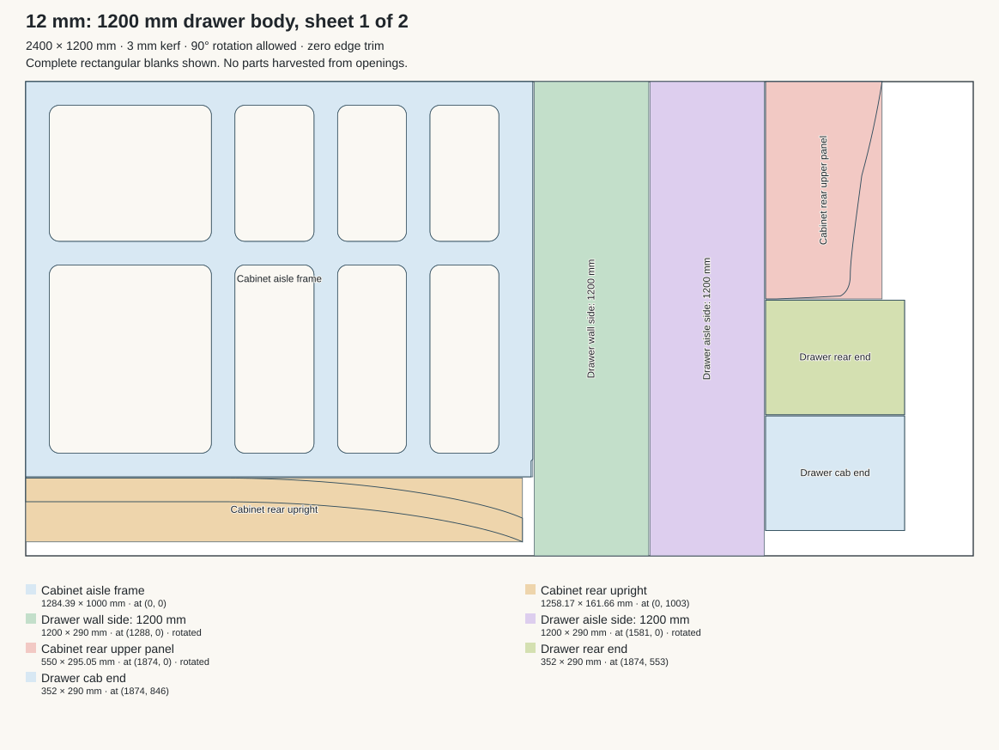
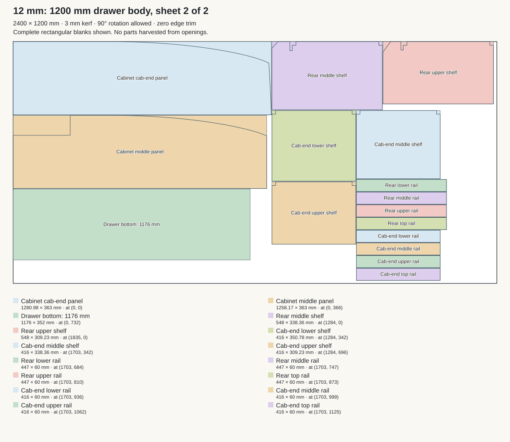
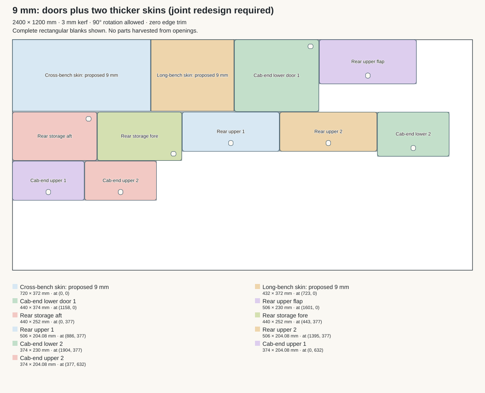

Current drawer: implemented with 1200 mm sides, two 12 mm full-width end caps and a 1200 × 352 mm bottom; overall length 1224 mm. The app now reports two 12 mm sheets, with minimum count proven, for both straight cuts and nesting. The drawings below retain the earlier proposal snapshot.
Updated decision: the long-bench cab-end skin has been removed, and the cross-bench rear skin now uses 9 mm ply shared with the doors. The drawings retain the earlier audit snapshot; the two-skin illustration below is superseded.
26 October 2026. No special-order purchases. The researched 2700 mm stock option has been excluded. All layouts include complete rectangular blanks, 3 mm kerf and 90° rotation. These drawings document alternatives; they do not change the CAD design or saved app layouts.
All 11 current pieces fit. Rear cross-beam, posts, slats, ledges and moving frame stay unchanged. The strip widths are 372, 1280, 576, 40, 60 and 42 mm, separated by five 3 mm cuts: 2385 mm total.

Shorten only the drawer sides from 1250 to 1200 mm and its bottom from 1226 to 1176 mm. Keep the bench structure. Retain 1200 mm locking runner bodies; reserve space toward the rear doors for their levers. The sheet-width fit assumes usable stock width of 1200 mm. The proposed drawer sides appear as blanks because their shorter final profiles have not been regenerated.


The currently selected 4 mm skin plywood is special order and needs replacing. All door blanks and both skin outlines fit on one 9 mm sheet; confirm local stock of that product. Increasing skin thickness from 4 to 9 mm requires changes to the end joints and adjacent frame positions; this is a cutting-layout result, not an approved structural redesign. Keep the slat datums independent of skin thickness.
